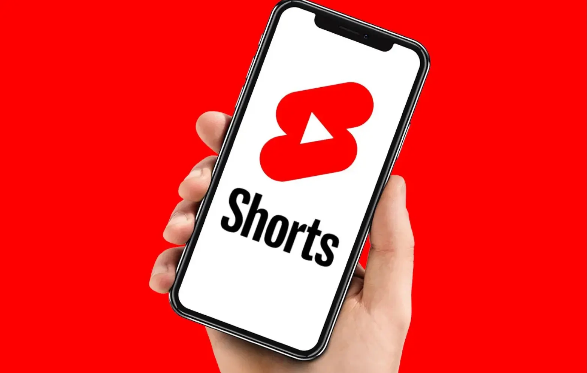

Different Video Formats
Youtube has alot of video formates which include youtube shorts, long form foemat which have videos that are longer than one minute. podcasts are one form of long form foemate. Also other people do lives dtreaming.Chooseing the right video format is essential because the different videos have different things to learn if you are to perform and succced on youtube, lets learn about the two different video formates; youtube shorts and long form videos
YouTube Shorts
YouTube Shorts is a fast-growing feature designed for quick, engaging videos that capture attention instantly. Its algorithm pushes short-form content to a massive audience, making it easier for creators to go viral. With high discoverability and monetization opportunities, Shorts is a powerful way to grow a channel quickly. youtube shorts are usuall under 3 minutes and quick to make, they involver making hooks in your video and keeping the viewers engaged throughout the whole video because high Average view duration ensures more views and going viral.YouTube Shorts allows creators to reach millions quickly with bite-sized, engaging videos optimized for mobile viewing.
Long-form YouTube Videos
Long-form YouTube videos provide depth, allowing creators to deliver valuable, in-depth content that builds strong audience connections. Unlike short clips, these videos have a longer shelf life and can continue generating views and revenue over time. With better watch time and ad placement opportunities, long-form content is key to sustainable growth on YouTube. Long-form YouTube videos offer creators the chance to tell detailed stories, educate, and engage audiences on a deeper level. They drive higher watch time, improving algorithm performance and increasing monetization potential. This format helps build loyal communities and long-term success.